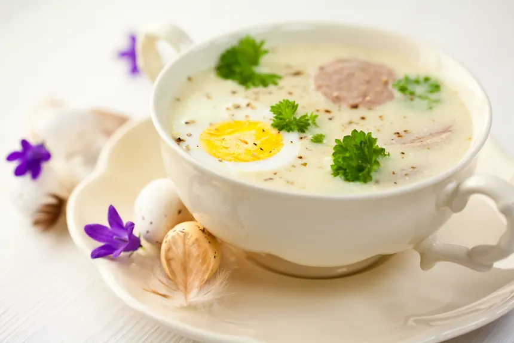

Mein Lieblingsessen: Barszcz Biały
Was ist Barszcz Biały?

Barszcz Biały ist eine traditionelle polnische Suppe. Sie hat einen leicht sauren Geschmack und wird oft mit Wurst und Ei serviert.
Zutaten
| Zutaten | Menge |
|---|---|
| Wasser | 500 ml |
| Weizenmehl | 6 EL |
| Körner Piment | 4 |
| Lorbeerblätter | 2 |
| Knoblauchzehen | 2 |
| Majoran | 1 EL |
Wie wird Barszcz Biały zubereitet?
-
Vorbereitung des Sauerteigs (Zakwas)
Der charakteristische saure Geschmack entsteht durch einen fermentierten Teig.
Zutaten: 500 ml abgekochtes, abgekühltes Wasser, 6 EL Weizenmehl, 2 Lorbeerblätter, 4 Körner Piment, 2 Knoblauchzehen und 1 EL Majoran.
Herstellung: Alle Zutaten in einem großen Glas mischen, mit Gaze abdecken und an einem dunklen Ort bei Raumtemperatur für 7 Tage stehen lassen (täglich umrühren).
-
Kochen der Basis
Fleisch und Gemüse: Eine weiße Wurst (in mehrere Stücke geteilt und mit einer Gabel gestochen) sowie Wurzelgemüse (Karotten, Petersilie, Sellerie) und eine halbierte, ungeschälte Zwiebel in einem Topf mit ca. 1–2 Litern Wasser aufkochen.
Simmern: Bei mittlerer Hitze ca. 30–40 Minuten köcheln lassen. Die Wurst und das Gemüse anschließend entfernen, in Scheiben schneiden und beiseite legen.
-
Vereinigung und „Weißen“
Vermischen: Den fertigen Sauerteig (zakwas) in die noch heiße Fleischbrühe rühren. Mit Majoran, Salz, Pfeffer und evtl. geriebenem Meerrettich abschmecken.
Zaharten der Sahne: Um ein Ausflocken zu vermeiden, wird saure Sahne (18–30%) mit etwas warmer Suppe vermischt (gehartet) und erst am Ende unter Rühren in den Topf gegeben.
Servieren: Die Suppe kurz erwärmen (nicht mehr kochen) und mit den Wurstscheiben und hartgekochten Eiern servieren.
Warum mag ich Barszcz Biały?
Ich mag Barszcz Biały, weil er sehr herzhaft und sättigend ist. Außerdem esse ich ihn schon seit meiner Kindheit und verbinde ihn mit meiner Familie und polnischer Küche.
Barszcz Biały ist eines meiner Lieblingsgerichte!